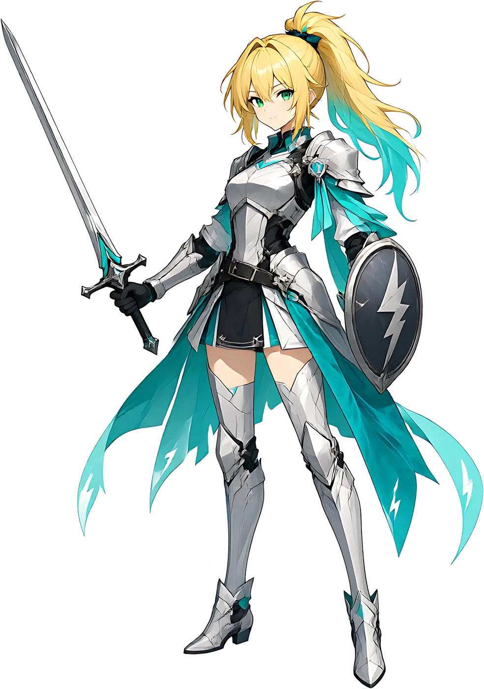

编译塔
从第一句 main 到最深处的源核，塔的每一层都由语法、内存与协议垒成。守塔的不是人，是还没被正确调用的旧系统。
01WORLD / 世界观
编译塔悬在 Link-Sekai 的云海之上。塔里的每一层，都是一门语言留下的疆域；每一道报错，都是世界在提醒你，它还在运行。
从第一句 main 到最深处的源核，塔的每一层都由语法、内存与协议垒成。守塔的不是人，是还没被正确调用的旧系统。
六条彼此平行的学习轨迹。剧情、练习、战斗与熟练度都记在同一条星轨上，走到哪里，世界就为你亮到哪里。
ACTIVE TRACKS账号与存档存在星网里。换一台设备，换一个客户端，也接着上一次没写完的句子继续。冲突会被合并，而不是覆盖。
CLOUD ARCHIVE「语法不是束缚。它是这个世界唯一愿意和你讲道理的部分。」
—— 界灵 · 零02OPERATORS / 六职业
选择一条星轨，就等于选择一种战斗方式。职业不是皮肤，它会改变你写代码、读报错、拆解问题的习惯。
JAVA ジャヴァ
以类为阵，以方法为咒。先编译，再让世界听从。
public classPYTHON パイソン
短句潜行，一行之内见胜负。缩进就是呼吸。
def solve():C シー
贴近内存，替世界止血。每一次越界都算一道伤口。
int mainC++ シープラスプラス
指针与齿轮，皆可重铸。代价写在每一行 new 后面。
template<T>
JAVASCRIPT ジャヴァスクリプト
在浏览器里立下不可撤销的誓。异步，但从不失约。
await promiseGO ゴー
并发启航，沿着星港的航线。轻装，但从不掉队。
go func()横向滑动查看全部六位 · DRAG / SWIPE
03SYSTEM / 玩法与系统
在限时回合里写出能通过判定的代码。语法错误会变成敌人的护甲，运行结果才是真正的伤害。
从输出、变量到指针与并发，每一章都有剧情、练习与 BOSS。关卡随语言特性单独编排。
星辉、经验、装备、进度与好友关系实时写回云端。两台设备同时改动时，冲突会被合并而不是覆盖。
网页、Android 与 Windows 共用一套账号与存档。在哪一端写下最后一句，就在哪一端继续编译。
05ARCHIVE / 视觉档案
官方站点主视觉与场景原画，提供原尺寸下载，可作桌面或手机壁纸。